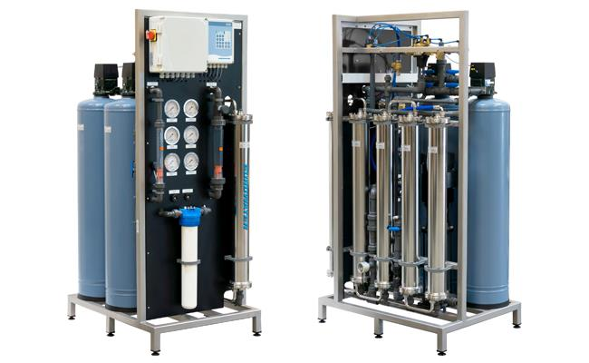
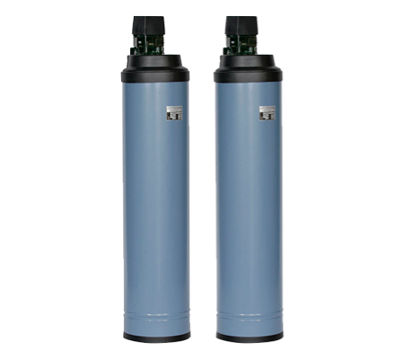
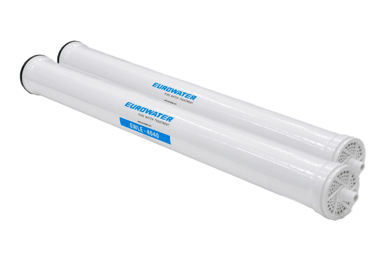
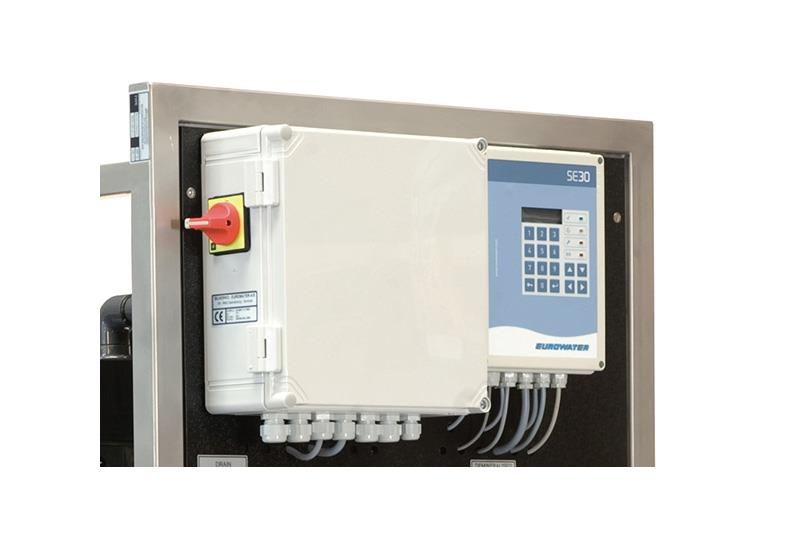
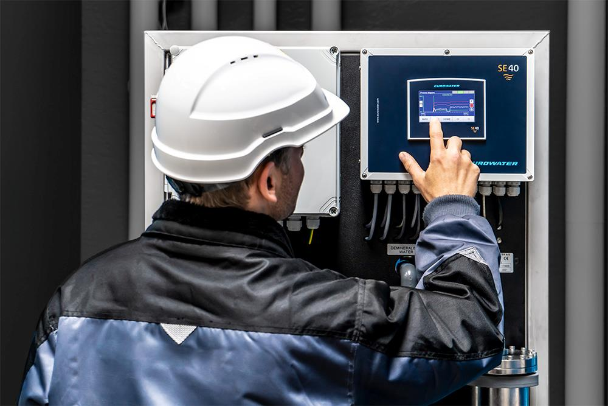
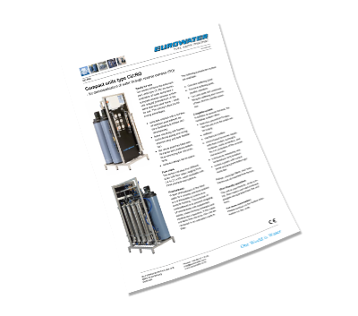

Компактная установка обратного осмоса - готова к работе!
Наша серия компактных установок типа CU:RO состоит из системы обратного осмоса вместе с предварительной обработкой на одной и той же платформе из нержавеющей стали, готовой к использованию. Система производит воду высокого качества, удаляя до 90% органических веществ и удерживая 98-99% солей.
Преимущества компактной системы обратного осмоса
Компактное решение для некоторых приложений
Оптимальная очистка воды для теплоцентралей
Оптимальная вода для подпитки и контура – деминерализованная, раскисленная, очищенная от механических примесей и с регулируемым рН. CU:RO используется датской компанией централизованного теплоснабжения, обеспечивающей требуемое качество воды.
Комплексная система водоподготовки с качественным оборудованием
Установка умягчения
Наши системы умягчения оснащены запатентованным 5-тактным клапаном, изготовленным из высококачественного синтетического материала и имеющим мало движущихся частей. Это обеспечивает надежную работу клапана, долгий срок службы и минимальное техническое обслуживание.

Эффективные мембраны обратного осмоса
Блок обратного осмоса оснащен низкоэнергетическими мембранами с высокой эффективностью удержания для превосходного качества воды. Все мембранные элементы обратного осмоса есть на складе с короткими сроками поставки.

Интегрированная система управления
CU:RO оснащенSE30 панель управления интеграция панели оператора и программируемого логического контроллера (ПЛК). Панель оператора доступна на передней стороне устройства с выходным сигналом 4-20 мА. Структура меню стандартизирована и доступна на нескольких языках для простого и быстрого доступа к рабочим данным и настройкам параметров.

Предварительная обработка обеспечивает надежную работу
Правильная предварительная обработка воды, подаваемой в систему обратного осмоса, является важным фактором для беспроблемной долгосрочной эксплуатации. Забивание мембран взвешенными твердыми частицами, минералами, образующими накипь, и другими примесями необходимо предотвращать соответствующими мерами. В компактной установке обратного осмоса предварительная обработка является стандартной функцией.
Виды предварительной обработки для компактной установки обратного осмоса
1 емкость
Установка умягчения
Одиночная работа
2 емкости
Установка умягчения
Параллельная работа
2 емкости
Установка Clearex
Параллельная работа с комбинированной загрузкой для умягчения и удаления свободного хлора
Стандартный продукт для простого обслуживания и обслуживания
Ассортимент нашей продукции включает в себя большое количество стандартных устройств, разработанных и изготовленных на нашем предприятии. Eurowater предлагает вам простое и быстрое обслуживание, которое включает в себя полную документацию, простую в использовании установку и запасные части, всегда имеющиеся на наших складах.
Для получения более подробной информации свяжитесь с нами

Скачать одну страницу о CU:RO
Получите все факты и преимущества компактной установки обратного осмоса от EUROWATER на этом одной странице.

Аренда компактной установки обратного осмоса
Вам нужна качественная деминерализованная вода в короткие сроки? Или вы хотите протестировать CU:RO перед покупкой? Арендуйте нашу мобильную установку очистки воды CU:RO, включая механический фильтр и умягчитель для предварительной очистки. Производительность до 2 м3/ч.